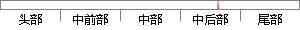

由于层是一种弱耦合结构，层与层之间的依赖是向下的，底层对于上层而言是“无知”的，改变上层的设计对于其调用的底层而言没有任何影响。
片段位置图

相似结果|
相似片段 1：中间，起到了数据交换中承上启下的作用。由于层是一种弱耦合结构，层与层之间的依赖是向下的，底层对于上层而言是“无知”的，改变上层的设计对于其调用的底层而言没有任何影响。如果在分层设计时，遵循了面向接口设计的思想，那么这种向下的依赖也应该是一种弱依赖关系。
相似片段 2：由于层是一种弱耦合结构，层与层之间的依赖是向下的，底层对于上层而言是“无知”的，改变上层的设计对于其调用的底层而言没有任何影响。如果在分层设计时，遵循了面向接口设计的思想，那么这种向下的依赖也应该是
相似片段 3：维护，具有较好的扩展性。由于层是一种弱耦合结构，层与层之间的依赖是向下的，底层对于上层而言是“无知”的，改变上层的设计对于其调用的底层而言没有任何影响。如果在分层设计时，遵循了面向接口设计的思想，那么
相似片段 4：由于，层是一种弱耦合结构，层与层之间的依赖是向下的，底层对于上层而言是“无知”的，改变上层的设计对于其调用的底层而言没有任何影响。如果在分层设计时，遵循了面向接口设计的思想，那么这种向下的依赖也
相似片段 5：，起到了承上启下的作用，从而实现表示层与数据访问层的数据交换。由于层是一种弱耦合结构，层与层之间的依赖是向下的，底层对于上层而言是“无知”的，改变上层的设计对于其调用的底层而言没有任何影响。如果在分层设
相似片段 6：、材料鉴定、评论、答辩时间表、投票等，这些类调用数据访问层的具体提供者类，从而增加更多的业务逻辑，实现复杂的增删改操作。由于层是一种弱耦合结构，层与层之间的依赖是向下的，底层对于上层而言是“无知"的，改变上层的设计对于其调用的底层而言没有任何影响。
相似片段 7：结构，层与层之间的依赖是向下的，底层对于上层而言是“无知"的，改变上层的设计对于其调用的底层而言没有任何影响。因为在分层设计时，遵循了面向接口设计的思想，所以这种向下的依赖也是一种弱依赖关系。在不改变
相似片段 8：的，底层对于上层而言是“无知"的，改变上层的设计对于其调用的底层而言没有任何影响。如果在分层设计时，遵循了面向接口设计的思想，那么这种向下的依赖也应该是一种弱依赖关系。因而在不改变接口定义的前提下，理想的分层式架构，应该是一个支持可抽取、可替换的“抽屉”式架构。
相似片段 9：的，底层对于上层而言是“无知”的，改变上层的设计对于其调用的底层而言没有任何影响。如果在分层设计时，遵循了面向接口设计的思想，那么这种向下的依赖也应该是一种弱依赖关系。因而在不改变接口定义的前提下，理想的分层式架构，应该是一个支持可抽取、可替换的“抽屉”式架构。
相似片段 10：业务逻辑层在体系架构中的位置很关键，它处于数据访问层与表示层中间，起到了数据交换中承上启下的作用。由于层是一种弱耦合结构，层与层之间的依赖是向下的，底层对于上层而言是“无知”的【28】，改变上层
|
※ 片段修改建议 ※
近似词参考：- 由于：因为
- 结构：布局 构造
- 依赖：依靠
- 对于：对 对付
- 无知：蒙昧
- 改变：转变 扭转
- 设计：计划
- 对于：对 对付
- 调用：挪用
系统自动生成语句：因为层是一种弱耦合布局，层与层之间的依靠是向下的，底层对上层而言是“蒙昧”的，转变上层的计划对其挪用的底层而言没有任何影响。
注：本片段修改建议为系统自动生成，仅供参考。